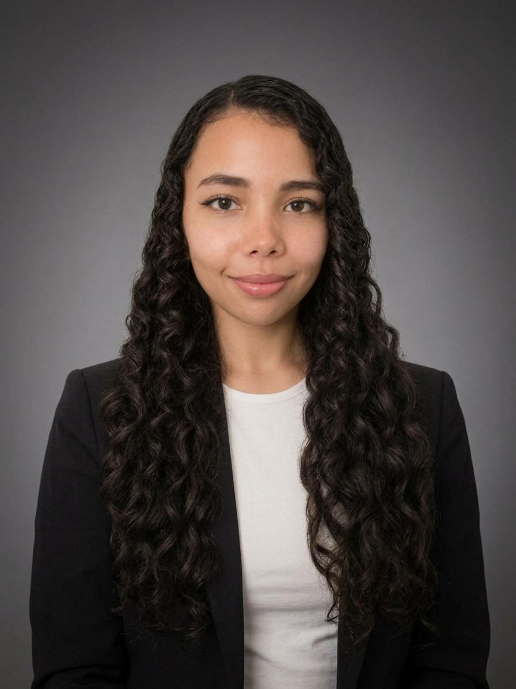
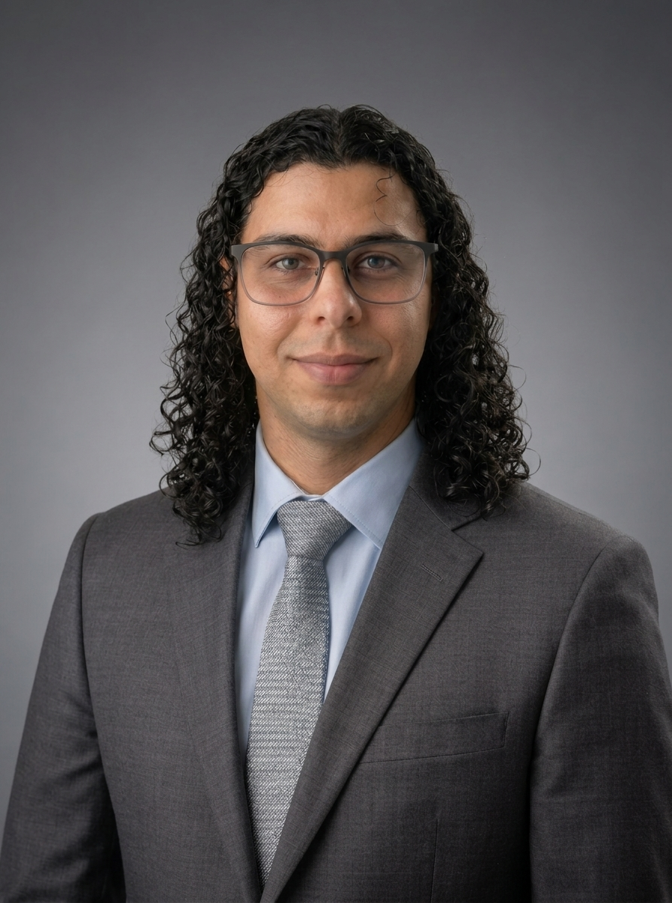
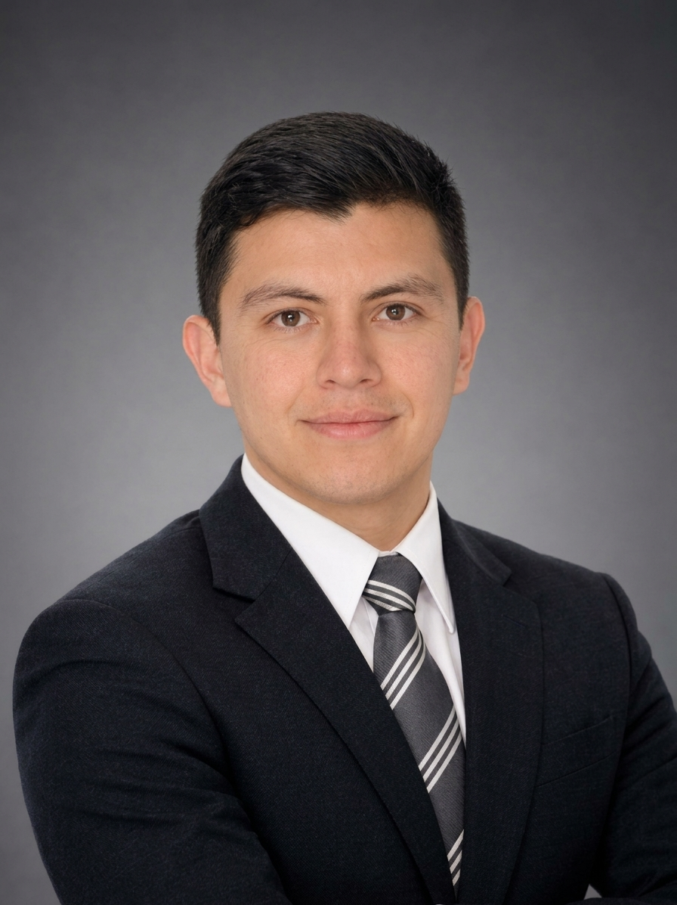

David Cortés
Gerente de proyecto
Empresa y equipo
Cremia Automations es una integradora de transformación digital para el sector lácteo. Diseñamos, integramos y ponemos en marcha la automatización, desarrollamos software a la escala de una pyme (un SCADA en Node-RED y la plataforma Cremia MES/ERP en Huawei Cloud) y acompañamos a las personas de la planta para que adopten la nueva forma de trabajar.
Mercado objetivo
Gerente de proyecto

Líder de simulación y mejora

Líder de arquitectura digital

Líder de procesos e instrumentación

Líder de gestión de producción

Líder financiero y comercial
| Integrante | Rol | Principal contribución |
|---|---|---|
| David Santiago Cortés Ávila | Gerente de proyecto | Coordinación, modelos físico y procedimental ISA-88, programa de fases del PLC, repositorio y página web |
| Ana María Orozco Reyes | Simulación y mejora | VSM, indicadores productivos, simulación en Tecnomatix, gemelo digital en Siemens NX Mechatronics Concept Designer, OEE y pruebas del software |
| Jesús Alberto Rivera Molina | Arquitectura digital | Estado del arte, arquitectura ISA-95, red OT/IT, ciberseguridad, Huawei Cloud y nodo de borde |
| David Felipe Cárdenas Cubides | Gestión de producción | Tiempos y capacidades, necesidades de información, SCADA en Node-RED y núcleo de la plataforma MES/ERP |
| Cristian Stiven Hoyos Peralta | Financiero y comercial | Presupuesto, análisis económico, modelo de negocio, gestión del cambio y ERP ligero de la plataforma |
| José Andrés Zapata Piñeros | Procesos e instrumentación | Recetas y lotes ISA-88; equipos, sensores, actuadores, estrategia de control y comunicaciones |
| Módulo | Líder técnico | Apoyo | Qué revisa |
|---|---|---|---|
| 0 · Estado del arte | Jesús Rivera | Cristian Hoyos | Estado del arte de las tres líneas y justificación del yogur |
| 1 · Transformación Digital Industrial | Andrés Zapata | Jesús Rivera (ISA-95 y nube), David Cortés (ISA-88) y David Cárdenas (plataforma y SCADA) | Parámetros, recetas, modelos ISA-88, instrumentación, control, arquitectura, flujo OT/IT y plataforma MES/ERP |
| 2 · Gestión y evaluación de la producción | David Cárdenas | Ana Orozco (VSM y simulación) | Tiempos, VSM actual y propuesto, indicadores, gemelo digital y necesidades de MES y ERP |
| 3 · Planeación y evaluación del proyecto | Cristian Hoyos | David Cortés (EDT y cronograma) | EDT, cronograma, presupuesto, finanzas, valor y gestión del cambio |
| Integración | David Cortés | Todos | Coherencia entre repositorio, página web y presentación |
Cada líder técnico coordina su módulo y garantiza la calidad de sus entregables; todos conocemos la propuesta completa y podemos sustentarla.
| Integrante | Valor que aporta | Tipo de valor | Horas | Tarifa (COP/h) |
|---|---|---|---|---|
| David Cortés | Dirección, fases ISA-88 del PLC y lote nocturno, puesta en marcha virtual, SAT y estabilización | Dirección y control | 775 | 90.000 |
| Jesús Rivera | Red OT/IT, ciberseguridad, Huawei Cloud, nodo de borde y programa de envasado del PLC | Especialidad escasa y crítica | 805 | 71.000 |
| David Cárdenas | SCADA en Node-RED, núcleo y registro de lote de la plataforma, capacitación | Especialidad escasa y crítica | 815 | 71.000 |
| Andrés Zapata | Equipos, instrumentos, tableros, recetas y calidad en la plataforma, montaje y arranque | Núcleo técnico del proceso | 800 | 67.000 |
| Ana Orozco | Gemelo digital, FAT, OEE, tablero y pruebas del software | Núcleo técnico de validación | 810 | 67.000 |
| Cristian Hoyos | Compras e importación, costos, gestión del cambio y ERP ligero | Gestión y soporte | 775 | 53.000 |
| Salario base (costo interno de Cremia, 2026) | Salario mensual | Costo empresa mensual (factor 1,52) | Costo por hora (182 h/mes) |
|---|---|---|---|
| Gerente de proyecto (1) | COP 6.000.000 (3,33 salarios mínimos) | 9.120.000 | 50.110 |
| Líder de área (5) | COP 4.000.000 (2,22 salarios mínimos) | 6.080.000 | 33.407 |
| Nómina mensual del equipo | 26.000.000 | 39.520.000 | — |
Ingenieros mecatrónicos con un año de experiencia, según las bandas de enganche del Observatorio Laboral para la Educación, el escalafón 1 de ACIEM y la guía salarial de Michael Page. El factor de 1,52 incluye seguridad social, parafiscales, cesantías, prima y vacaciones.
Al cliente no se le cobra nómina: se le cobran servicios de ingeniería por actividad de la EDT. La tarifa parte del costo por hora de cada integrante y lo multiplica por un factor según el tipo de valor que aporta (2,13 para especialidades escasas, 2,01 para el núcleo técnico, 1,80 para la dirección y 1,59 para gestión y soporte). En total, 4.780 horas y COP 333,7 millones de ingeniería, 1,41 veces la nómina completa de las 26 semanas, por encima del factor mínimo de 1,39 de administración, imprevistos y utilidad.
Modelo de negocio